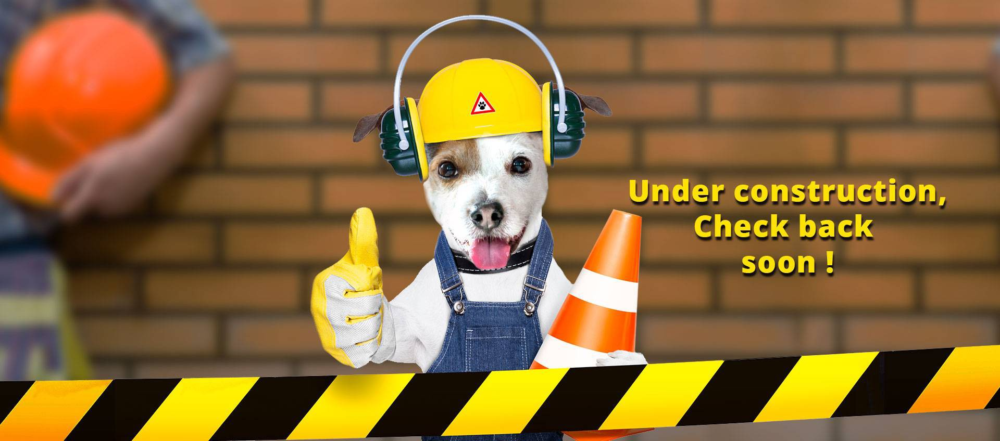

<div class="centrado">
  <h1>VUELVA POR FAVOR</h1>
  <div class="example-button-row">
    <a mat-raised-button color="primary" matTooltip="Volver al Mega Dashboard!" routerLink="/dashboard">VOLVER AL DASHBOARD</a>
  </div>
</div>
